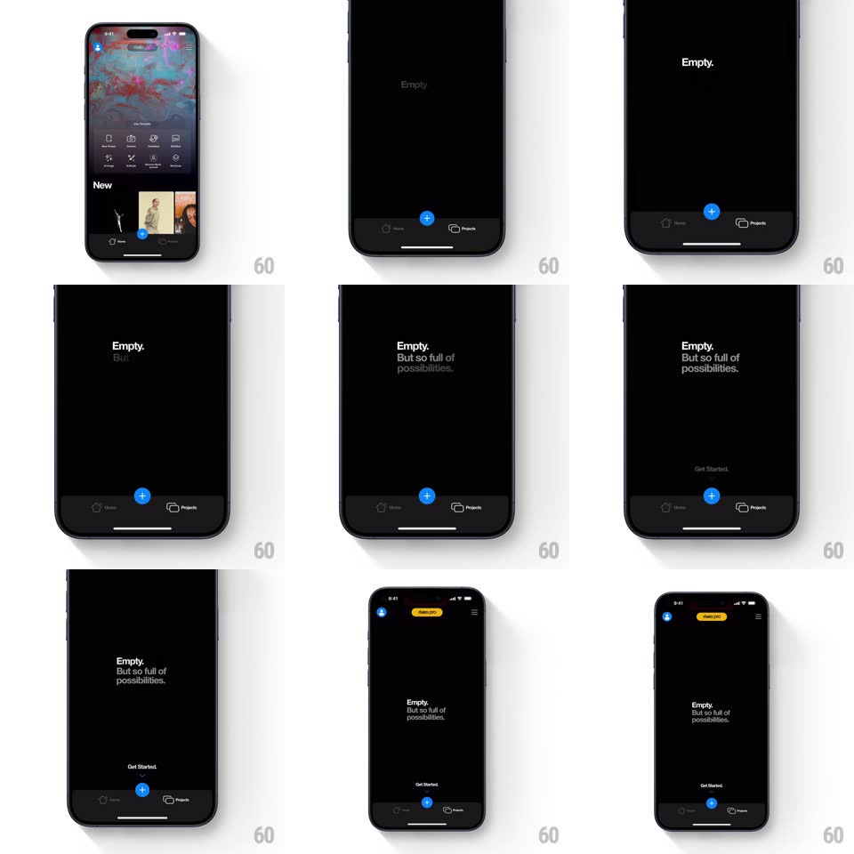

Media
Frame-by-frame

Rebuild this interaction 1:1: Riveo's empty Projects state - "Empty." lands alone on black, then "But so full of possibilities." staggers in beneath it, and "Get Started." appears with an arrow guiding the eye to the pulsing blue + in the tab bar.

Rebuild this interaction 1:1: Riveo's empty Projects state - "Empty." lands alone on black, then "But so full of possibilities." staggers in beneath it, and "Get Started." appears with an arrow guiding the eye to the pulsing blue + in the tab bar.
## Integration
Integration: stack-agnostic spec - springs given as stiffness/damping, timed motions as duration + curve; map every value to your framework and animation library of choice.
## Scene
Black screen: centered type sequence ("Empty." bold; "But so full of possibilities." in two gray weights), then bottom-center "Get Started." with a small down arrow; the tab bar (Home, big blue + button, Projects) sits at the bottom with the + glowing.
## Motion spec
Pattern: staggered typography guiding to the CTA.
- "Empty." fades in word-solid at slight oversize and settles (scale 1.04 -> 1, 400ms, ease-out).
- 400ms later "But so full of" fades up, then "possibilities." 150ms after - a three-beat reveal, each line rising 10px as it fades.
- "Get Started." appears low with its arrow (250ms), then the arrow begins a gentle bob (translate 0 -> 6px -> 0, 1.2s loop) pointing at the + button.
- The blue + pulses (scale 1 <-> 1.12 with a soft glow, 1.4s loop) - the only looping element.
## Calibration
- The type stack is dead-center; the CTA pairing (text + arrow) sits low, aligned with the +.
- Three text beats max - the wit lands through timing, not decoration.
## Reduced motion
All lines fade in together; + button static.
## Don't miss
- "Empty." is bold white; the follow-up is lighter gray - hierarchy does the joke.
- The arrow bob and + pulse are synced in period but offset in phase, so the eye bounces between them.